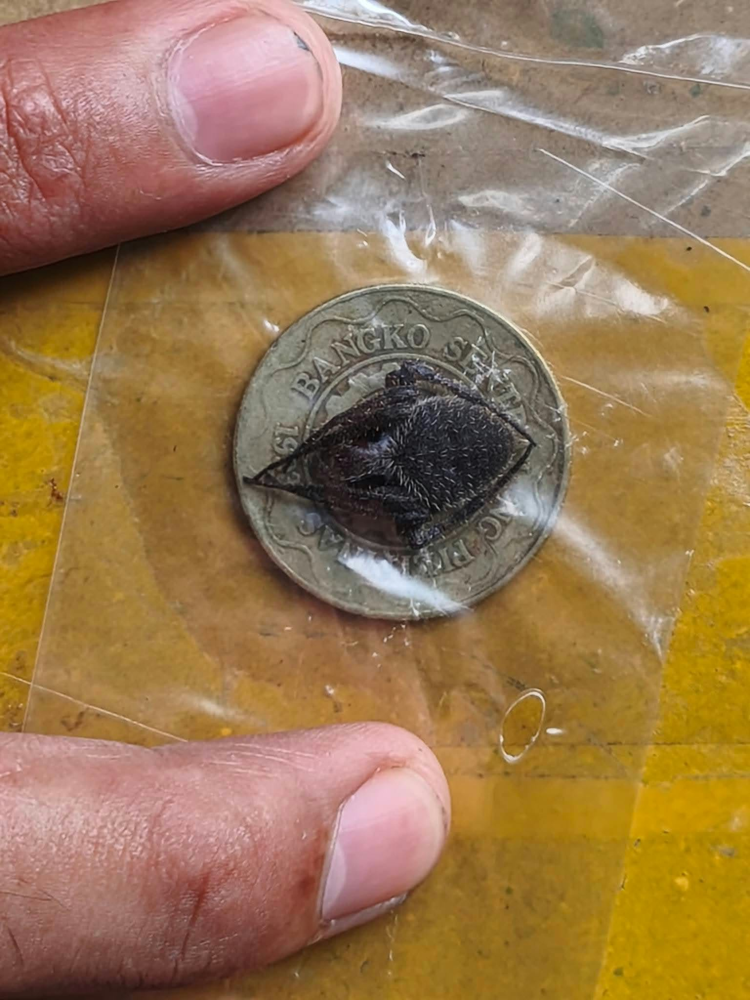

SHEEESH! Ito ang Black Panther Spider! Dark ang dating at parang naka-stealth mode sa isang game. Hindi kailangan ng maraming kulay para maging astig. Brukutug!
Ang gagamba ay hindi insekto. Ang insects ay may anim na paa, habang ang gagamba ay may walong paa. Basic biology pero importante, mga oat!
Balikan ang nakaraan